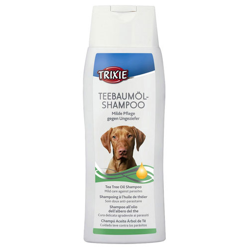

#3 loại sữa tắm cho chó được sử dụng nhiều hiện nay
Có lẽ với những người nuôi chó nói chung, việc lựa chọn sữa tắm cho cún chưa bao giờ là điều dễ dàng. Giữa muôn vàn sản phẩm trên thị trường, việc chọn đúng dòng sản phẩm phù hợp với cún còn là điều khó khăn gấp bội. Vì vậy, mình viết bài này với mong muốn giúp các bạn nuôi cún có được một loại sữa tắm phù hợp với cún cưng. Bài viết hoàn toàn dựa trên kinh nghiệm cá nhân cùng với một số ý kiến mình đọc được trên nhiều diễn đàn.
1. Sữa tắm SOS
SOS là dòng sản phẩm mình sử dụng đầu tiên cho cún. SOS ghi trên bao bì được chiết xuất từ thiên nhiên, không gây kích ứng cho da đồng thời đem lại bộ lông mềm mịn hơn. Điểm đặc biệt của dòng sữa tắm này là chúng khá ít bọt theo như nhận định của mình, kháng khuẩn và chống rận khá tốt. Cún nhà mình rất ít rận mặc dù chơi ở ngoài rất nhiều.
Đây cũng là dòng sản phẩm được bán khá nhiều tại các Petshop nên bạn hoàn toàn khá dễ dàng khi mua chúng. Theo như mình sử dụng thì mùi hương của sữa tắm này lưu lại trong 5-6 ngày. Lúc tắm xong mùi thơm hơi nồng, nếu ngửi có vẻ hơi khó chịu, lông mịn hơn. Nếu là dòng chó lông dài như Poodle, Pom… sữa tắm SOS giữ màu lông rất tốt, không bị bạc màu.
Mình dùng lọ màu xanh da trời cho cún là Poodle nhưng sau này thấy hương thơm khó chịu nên mình đã chuyển qua sử dụng các dòng sản phẩm khác thử xem. Với mình SOS dùng cũng khá ổn, kháng khuẩn rất tốt.
2. Sữa tắm cho chó mèo Joyce & Dolls Rose Dew
Đây là thương hiệu sữa tắm chó mèo có nhiều dòng sản phẩm, mình lựa chọn dòng ROSE DEW có mùi thơm của hoa hồng. Mùi thơm dịu nhẹ và bám lông rất lâu. Hiện tại mình đang sử dụng cho cún nhà mình thấy rằng độ bền mùi rất tốt. Mùi hương giữ lại hơn 8 ngày.
Theo như thông tin của nhà sản xuất, dòng sản phẩm này an toàn cho da giúp da chó mèo ổn định, hương thơm lưu trên lông tốt. Không gây ra hiện tượng kích ứng và phù hợp với da khô.
Độ tạo bọt của sản phẩm rất tốt. Theo cá nhân mình sử dụng, sản phẩm này tạo nhiều bọt hơn SOS, hương thơm cũng lâu hơn tuy nhiên nên pha sữa tắm này với một lượng nước nhỏ cho loãng rồi tắm cho cún. Dòng sản phẩm này hơi đặc nên khó có thể tráng sạch khi sử dụng quá nhiều.
Cách sử dụng: Pha loãng với một lượng nước nhỏ. Chia làm 2- 3 lần tắm. Bạn xịt hoặc cho bông tắm vào gáo nước pha sữa tắm rồi xoa lên lông chó đã làm ướt. Sau đó xịt nước và tráng sạch.
3. Sữa tắm cho chó Trixie
Sữa tắm cho chó Trixie là 1 thương hiệu của Đức được nhâp khẩu trực tiếp tại Việt Nam. Thương hiệu này được khá nhiều người nuôi chó tin dùng bởi chúng đáp ứng đầy đủ sự an toàn cho cún.
Bạn hoàn toàn an tâm về sản phẩm của Trixie khi dòng sản phẩm sữa tắm này được chiết xuất hoàn toàn từ cây chè nên an toàn cho da. Ngoài ra các tinh chất trong cây chè còn có tác dụng diệt khuẩn, ngăn chặn sự phát triển của ký sinh trùng khiến da của cún khỏe mạnh, lông sáng bóng hơn rất nhiều.

So với 2 dòng sản phẩm trên thì Trixie rẻ hơn thì phải theo như mình khảo sát. Mùi hương của Trixie cũng khá tự nhiên nhưng cảm giác vẫn thua ROSE và SOS. Tuy nhiên về độ an toàn và các bạn yêu các sản phẩm chiết xuất tự nhiên thì đây là dòng sản phẩm số 1.
Nói tóm lại mỗi dòng sản phẩm sữa tắm lại có một đặc điểm và công dụng khác nhau. Những công dụng này tùy thuộc vào mục đích của nhà sản xuất hướng tới người sử dụng vì vậy bạn nên tham khảo ý kiến của những người bán hàng để được tư vấn về sản phẩm.